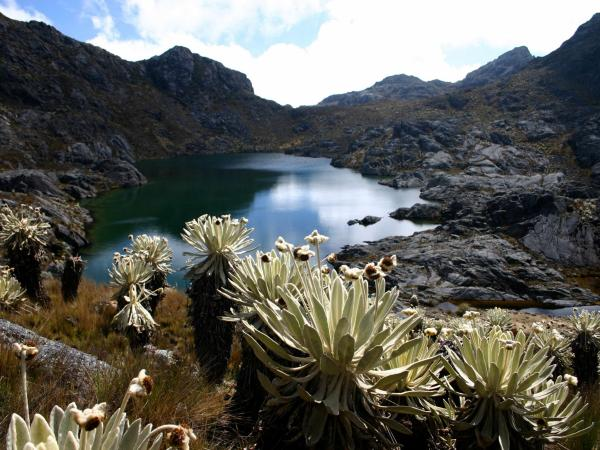
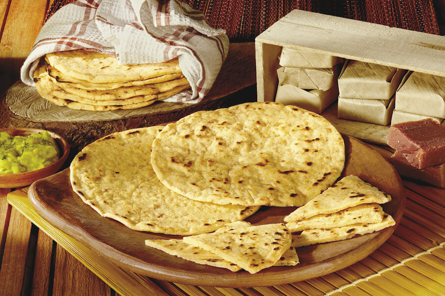
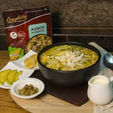

SANTANDER

TURISMO EN EL DEPARTAMENTO
Santander es un departamento colombiano que ofrece una gran variedad de atractivos turísticos, como parques naturales, deportes de aventura, festividades y cultura
PARQUES NATURALES
- Parque Nacional del Chicamocha, con el teleférico más largo de Suramérica
- Parque Nacional de Santurbán 
- Cascada de Juan Curi
- Quebrada las Gachas
- Parque Natural El Gallineral
.jpeg)

.jpeg)
COMIDA TIPICA
La comida típica de Santander, Colombia, incluye arepas, sopas, carnes, bocadillos, y hormigas culonas.
.jpeg)
- Arepa santandereana, preparada con masa de maíz y servida como acompañamiento 
- Arepa ocañera de maíz pilado, típica de Ocaña
- Mute, sopa de maíz blanco con res o cerdo, callo picado, papa, granos, y especies
- Sopa de pichón
- Sopa de fríjoles, también conocida como ajiaco ocañero 
- Cabrito, uno de los platos más típicos de la región
- Carne oreada, una de las comidas más conservadas de la gastronomía de Santander
- Bocadillo veleño, pasta dulce hecha de guayaba
- Insecto que se ha convertido en el símbolo de la gastronomía santandereana
- Pepitoria, preparada con las vísceras del cabro o cordero
- Tamal santandereano
- Masato, bebida fermentada que se prepara con arroz, agua, harina de trigo, azúcar, clavos y canela
AREPAS
.jpeg)
SOPAS


CARNES


BOCADILLOS

HORMIGAS CULONAS

OTROS PLATOS


SECTOR ECONOMICO
Las principales actividades económicas del departamento de Santander son la agricultura, la industria, la construcción y el comercio.
Mandarinas
Naranja
Caña de azucar
Piñas
Frutas variadas
Cultivo de limon
Palma de aceite
- Se destacan los productos metalmecánicos, confecciones y textiles, plástico y derivados del petróleo.
- Se fabrican productos minerales no metálicos, maquinaria y equipo de uso especial, productos de molinería, almidones y productos derivados del almidón.
- Se elaboran productos alimenticios, aceites y grasas de origen vegetal y animal.
AGRICULTURA
El departamento tiene potencial para producir palma de aceite, piña, caña panelera, mandarina, limón y plátano.


MANUFACTURA


Para volver a la pagina principal presiones aqui: volver